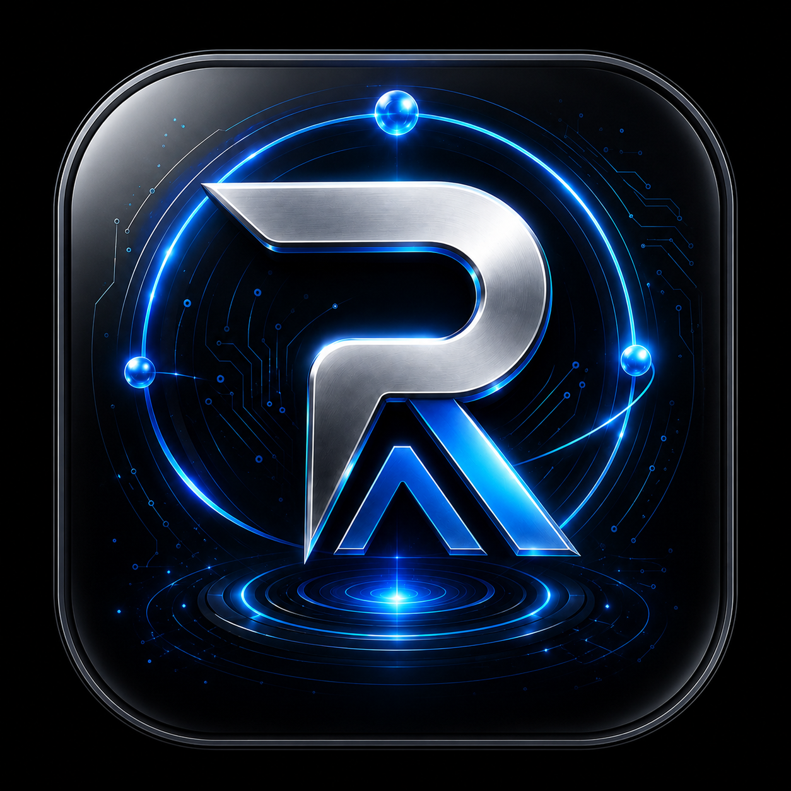

Focused workflow support for the product domain.
Command visibility
RayAI turns product noise into a command view.
RayAI helps visitors understand ecosystem readiness, product state, and next valid actions without duplicating Core 12 intelligence.
Live governed web appCore 12 governedRender-only surface

RayAI
Live governed web app
Value
Focused product role
Short product value, clear ownership, and no duplicated intelligence logic.
Signals are review context, not standalone scoring engines.
Outputs stay governed, explainable, and human-reviewed.
Visibility remains permission-scoped; the website does not expose tenant logic or intelligence internals.